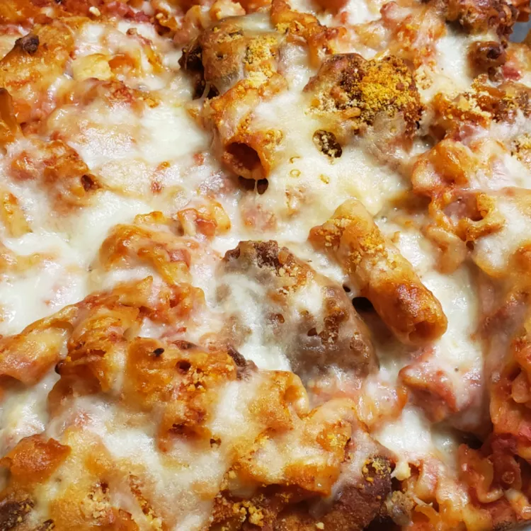

description
Perfect for potluck meals, family gatherings, or in a smaller batch, for a winter comfort food meal for the family. Just my take on traditional Chicken Parmesan. I came up with this for my wife's corporate potluck lunch. She wanted Chicken Parmesan, but it was too difficult to feed 20 people the conventional way. Figured a casserole would work just as well. It did!
Ingredients
- 1 (16 ounce) package uncooked rotini pasta
- 1 pound skinless, boneless chicken breasts, cut into bite-size pieces
- 2 cups vegetable oil for frying
- 2 cups flour
- 4 eggs, beaten
- 2 cups Italian seasoned bread crumbs
- 2 tablespoons garlic powder
- 1 (16 ounce) package shredded mozzarella cheese, divided
- ½ cup grated Parmesan cheese
Directions
- Fill a large pot with lightly salted water and bring to a rolling boil over high heat. Once the water is boiling, stir in the rotini, and return to a boil. Cook uncovered, stirring occasionally, until the pasta has cooked through, but is still firm to the bite, about 8 minutes. Drain well in a colander set in the sink.
- Heat oil in a deep-fryer or large saucepan to 375 degrees F (190 degrees C), and preheat an oven to 350 degrees F (175 degrees C).
- Place the flour, egg, and bread crumbs in 3 separate bowls. Mix the garlic powder into the bread crumbs. Working in batches, coat the chicken breast in the flour, then dip them in the egg, and finally coat with the bread crumbs. Carefully fry the coated chicken in the hot oil in small batches until golden brown and no longer pink in the center, 3 to 4 minutes. Drain the fried chicken over paper towels.
- Combine cooked pasta, fried chicken, 1/2 package of mozzarella cheese, and 1/2 cup grated Parmesan cheese in a large bowl. Stir in the marinara sauce. Pour the red wine into the empty marinara sauce jar; cover and shake the jar, and empty the contents into the bowl of pasta. Stir to combine. Spread pasta mixture in a large casserole dish, and cover with aluminum foil.
- Bake in the preheated oven for 30 minutes. Remove the aluminum foil and sprinkle with the remaining 1/2 package of mozzarella cheese and 1/2 cup of Parmesan cheese. Return to the oven, and continue baking until the cheese has melted, about 30 minutes. Remove from the oven, and allow to rest for 5 minutes before serving. Serve hot.
Return to top
Return to main page